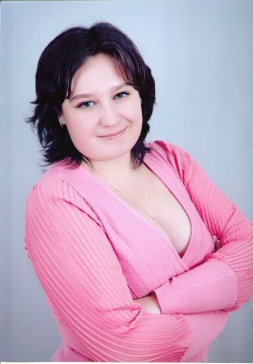

Об учителе

Анастасия Васильевна
Учитель русского языка и литературы
Стаж работы: 15 лет
Место работы: МБОУ "СОШ №24", г. Абакан (с 2013 года)
Кабинет: №105 (1 этаж)
Образование
- Высшее профессиональное (специалитет): ГОУ ВПО «Красноярский государственный педагогический университет им. В.П. Астафьева», 2010 год
- Магистратура: В 2013 году присвоено звание магистра филологического образования
- Квалификация: Филолог. Преподаватель русского языка и литературы
Профессиональные достижения
- Член жюри муниципального этапа Всероссийской олимпиады школьников по русскому языку
- Призер Всероссийской метапредметной олимпиады «Команда большой страны»
- Призер регионального этапа Всероссийской олимпиады учителей русского языка «Хранители русского языка»
- Активный участник муниципальных и региональных семинаров и конференций
- 2024 год: Награждена Почетной грамотой ГУО Администрации города Абакана
Моя философия преподавания
Я верю, что каждый ученик способен полюбить русский язык и литературу. Моя задача — не просто научить правилам, а открыть красоту родного слова, помочь увидеть глубину литературных произведений и научиться выражать свои мысли грамотно и красиво.
Интересы и увлечения
- Путешествия по историческим и литературным местам России
- Рукоделие: создание декоративных элементов для кабинета и учебных материалов
- Изучение творчества сибирских писателей
- Собирание редких изданий русской классики
📞 Контакты
Если у вас есть вопросы, перейдите на страницу Контакты.